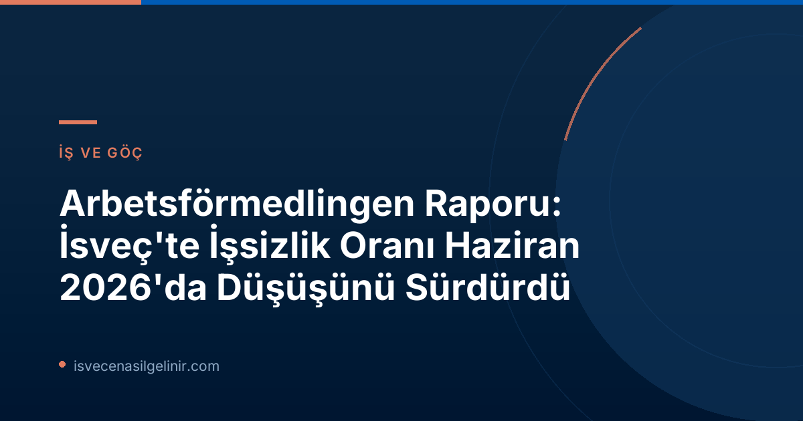

İsveç Ekonomisi İçin Umut Veren Gelişmeler!
İsveç İş ve İşçi Bulma Kurumu (Arbetsförmedlingen), 16 Temmuz 2026 tarihinde yayınladığı basın duyurusuyla İsveç işgücü piyasasındaki son gelişmeleri paylaştı. Rapora göre, Haziran 2026 itibarıyla İsveç genelinde işsizlik oranları önemli ölçüde düşüş gösterdi ve bu durum, kurumun önceki tahminleriyle uyumlu bir şekilde ilerliyor.
Bu olumlu tablo, İsveç'te kariyer hedefleyenler ve yaşam kurmak isteyenler için umut verici sinyaller taşıyor. İsveç vatandaşlık süreci ve sınavı hakkında bilgi almak isteyenler, kapsamlı kaynak için İsveç Vatandaşlık Sınavı adresini ziyaret edebilirler.
Haziran 2026 İşsizlik Verilerine Yakından Bakış
Arbetsförmedlingen'in Haziran 2026 verileri, işsizlikteki düşüşün detaylarını ortaya koyuyor. İşte öne çıkan bazı önemli rakamlar:
Haziran 2026 İşsizlik İstatistikleri
- Toplam İşsiz Sayısı: 344.000 (Haziran 2025'e göre 22.000 kişi azaldı)
- İşsizlik Oranı: %6,4 (Haziran 2025'teki %6,9'dan %0,5 düştü)
- Genç İşsiz Sayısı (18-24 yaş): Yaklaşık 39.000 (Önceki yıla göre 3.000 kişi azaldı)
- Genç İşsizlik Oranı: %7,3 (Haziran 2025'teki %7,8'den düştü)
- Uzun Dönem İşsiz Sayısı (En az 1 yıl): 148.000 (Haziran 2025'teki 152.000'den azaldı)
- İşe Yerleşen Sayısı: 36.000 (Haziran 2025'e göre 3.000 kişi arttı)
- İş Başvurusu Yapan Yeni Kişi Sayısı: 43.000 (Önceki yıla göre 1.000 kişi azaldı)
- İşten Çıkarma Bildirimleri (Varsel): 2.857 (Haziran 2025'teki 4.606'dan azaldı)
Demografik Gruplarda ve Bölgelerde İşsizlik Durumu
İşsizlikteki bu olumlu gelişim, ülkenin genelinde ve tüm demografik gruplarda gözlemlendi. Hem erkeklerde hem de kadınlarda, İsveç doğumlu ve yurt dışı doğumlu bireylerde işsizlik oranları düşüş kaydetti. Ancak, bölgesel farklılıklar hala devam ediyor.
| Bölge | İşsizlik Oranı (Haziran 2026) |
|---|---|
| Skåne | %8,4 |
| Södermanland | %8,0 |
| Västmanland | %7,8 |
| Norrbotten | %3,4 |
Uzun Dönem İşsizlikte Beklenmedik Gelişmeler
Bir yıldan uzun süredir işsiz olan kişi sayısında da düşüş yaşanması dikkat çekici. Bu gruptaki 148.000 kişiden yaklaşık yarısı Avrupa dışı ülkelerde doğmuş bireylerden oluşuyor. Ancak son dönemde bu grubun işgücü piyasasına katılımında, İsveç doğumlu uzun dönem işsizlere kıyasla daha pozitif bir gelişim görüldü. Avrupa dışı doğumlu uzun dönem işsizlerin sayısı geçtiğimiz yıla göre 6.000 kişi azalarak 68.000 seviyesine geriledi.
İsveç Vatandaşlık Süreci İçin Önemli Bilgiler
İsveç’te uzun dönem yaşayan ve çalışmak isteyen yabancı uyruklular için vatandaşlık süreci büyük önem taşımaktadır. İsveç vatandaşlık testi, bu sürecin kritik bir parçasıdır. Gerekli tüm bilgilere ulaşmak ve sınava hazırlanmak için sverigemedborgarskapsprov.com adresini ziyaret edebilirsiniz.
Arbetsförmedlingen İstatistiklerinin Kapsamı ve Detayları
Arbetsförmedlingen'in aylık basın bültenleri, kurumun kendi kayıt verilerine dayanmaktadır. Bu verilerde açık işsizler ve aktif destek programlarına katılanlar gibi farklı iş arayan kategorileri yer almaktadır. İşsizlik oranı, kayıtlı işgücüne oranla verilmektedir.
Önemli Bir Not: Resmi İstatistik ve Yöntem Farklılıkları
Arbetsförmedlingen'in faaliyet istatistikleri, İsveç'in resmi istatistikleri arasında yer almamaktadır. Resmi işsizlik istatistikleri, İsveç İstatistik Kurumu (Statistiska centralbyrån - SCB) tarafından yürütülen İşgücü Araştırması (Arbetskraftsundersökningen - AKU) ile rapor edilmektedir. Ancak Arbetsförmedlingen verileri, işgücü piyasasının genel eğilimlerini anlamak için önemli bir gösterge sunmaktadır.
Ayrıca, 2024 yılında işgücü büyüklüğünün ve dolayısıyla bağıl işsizlik seviyesinin hesaplanma yönteminde bir değişiklik yapılmıştır. 2026 yılı için sunulan istatistikler 16-66 yaş aralığını kapsarken, 2025 yılı istatistikleri 16-65 yaş aralığını kapsamaktadır.
Gelecek Perspektifi
Arbetsförmedlingen'in verileri, İsveç iş piyasasında süregelen toparlanmayı ve işsizlik oranlarındaki düşüş eğilimini göstermektedir. Bu, hem mevcut çalışanlar hem de iş arayanlar için olumlu bir ortam yaratmaktadır.
Temmuz ayı faaliyet ististikleri ise 13 Ağustos 2026 tarihinde saat 06:00'da yayımlanacaktır.
Referanslar:
- Arbetsförmedlingen - Pressmeddelande, 16 juli 2026 - https://arbetsformedlingen.se/om-oss/press/pressmeddelanden?id=82713E90C9CAC4CD&pageIndex=1&year=0&uniqueIdentifier=
- İsveç Vatandaşlık Sınavı - https://sverigemedborgarskapsprov.com
İsveç'te Kariyer ve Yaşam
İsveç'te iş fırsatları, göçmenlik süreçleri ve vatandaşlık başvuruları hakkında daha fazla bilgi edinin. Geleceğinizi İsveç'te kurmak için ilk adımı atın!